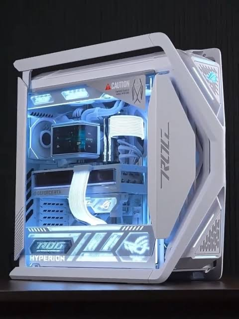

CYBERSERCH / TU OFICINA, CON MENOS VUELTAS
Páginas web y automatización para tu negocio
Presenta tus servicios en una web clara, reduce tareas repetitivas y cuida tus datos desde el diseño.
Toca un objeto o elige una estación. Axiom te acompaña.
EL NÚCLEO / A UN TOQUE
Vuelve al núcleo de IA local.
Explora sus órbitas con el cursor o al tacto. IA local, seguridad y software en un mismo lugar.


TAMBIÉN PUEDES IR DIRECTO
Elige por dónde empezar.
La misma habitación, en una lista fácil de recorrer.
DE LA IDEA AL SIGUIENTE PASO
Primero lo entiendes. Después decides.
Prueba una herramienta gratis, mira ejemplos o prepara una estimación. Tú eliges el ritmo.

Gabinete y fuente de energía: en camino.
Próximo paso: más capacidad para nuevas herramientas y proyectos.
Avance estimado del equipamiento.
OPERACIÓN: SILICIO PESADO
Entrenar IA local sale más caro que mantener un vicio.
Podría usar APIs en la nube y cobrarte suscripción por cada herramienta, pero prefiero crear herramientas que procesen tus archivos en tu navegador, sin subirlos. Si mis desarrollos te han ahorrado horas de trabajo (o te han salvado el pellejo), invítale unos watts de potencia al laboratorio.
«No pido aguinaldo, ni seguro médico, ni vacaciones... literal solo quiero no crashear a mitad de una inferencia.» — Axiom
En PayPal puedes elegir $50 MXN, $150 MXN u otra cantidad.
Gracias por apoyar lo que voy construyendo. Las aportaciones son voluntarias.